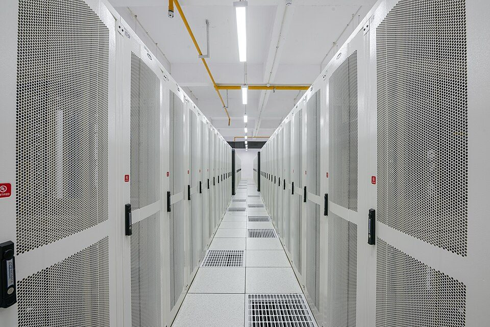
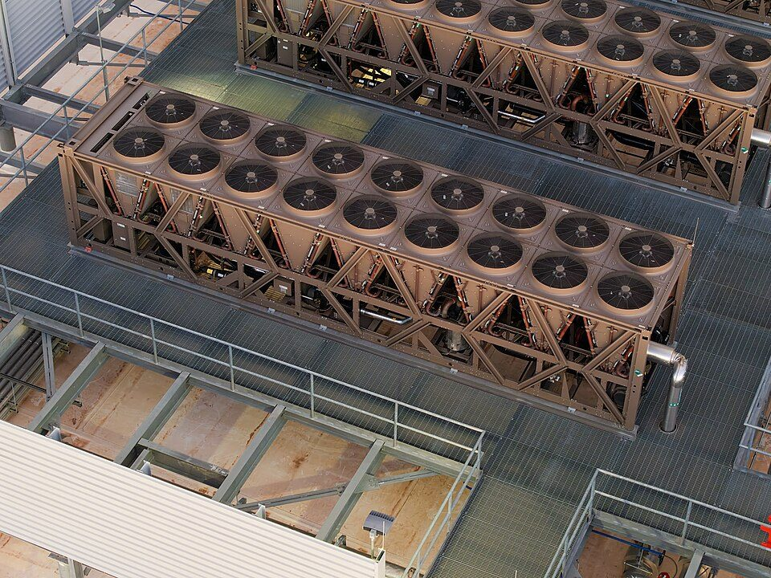
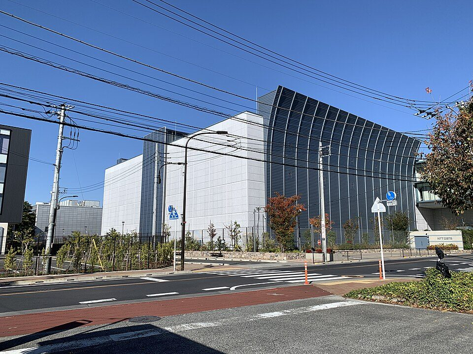

データセンターとは？ 中の設備、電気と冷却、日本の立地と最新の動き
要点まとめ
生成AIやクラウドのニュースで、「データセンター」という言葉をよく聞くようになりました。資源エネルギー庁は、SNSや動画の閲覧、金融取引などで毎日やり取りされる大量のデータの処理を担う、デジタル社会に欠かせないインフラだと説明しています[5]。この記事では、データセンターの中の設備、電気と冷却、電力消費の見通し、日本の立地と国の政策を、国際エネルギー機関（IEA）、資源エネルギー庁、総務省、電力広域的運営推進機関などの資料でまとめました。業界団体の日本データセンター協会（JDCC）の資料は、「協会の説明」として紹介します。

データセンターとは
サーバーを棚に収め、列に並べた建物
電気・冷却・通信の設備で、機器を動かし続ける
IEAは、データセンターを、サーバー（データを処理・保存するコンピューター）、ストレージ（データを保存する装置）、ネットワーク機器などをラック（機器を収める棚）に入れ、列に並べて収める施設と説明しています[1]。資源エネルギー庁は「データ処理・通信のための装置が設置・運用されている建物」としています[5]。JDCCは、ふつうのオフィスビルより多くの通信回線を引き込んでいること、耐震構造であること、大容量の蓄電池や自家発電装置を備えていることを特長に挙げています[8]。
ネットのサービスの「向こう側」で動いている
スマホなどの要求に応じて、サーバーが情報を届ける
JDCCは、スマホからの要求に応じて、データセンターのサーバーが情報を読み出し、インターネットを通じて利用者の手元に届けていると説明しています[2]。スマホで撮った写真のクラウド（ネット上の保存場所）への保存（設定によっては自動）や、見逃したテレビ番組の配信なども、データセンターに支えられているとしています[2]。一方で協会は、多くのクラウド事業者がデータセンターの所在地や消費電力、サーバーの台数などを公開していないとしています[2]。そのため、あるサービスがどこのデータセンターで動いているかを、利用者が外から知るのは難しいと考えられます。
| 分類 | 内容 |
|---|---|
| ハウジング型 | サーバーなどのIT機器は持たず、機器を置く場所と、空調や照明などの設備を他の事業者に貸す[5] |
| ホスティング・クラウド（オーナー）型 | 建物・設備からIT機器まで、すべて自社で持つ[5] |
| ホスティング・クラウド（テナント）型 | ハウジング型の事業者から借りた場所に、自社のIT機器を持ち込む[5] |
大きさはさまざま。AI向けの大型施設も
AI向けの大型施設は、10万世帯分の電気を使うことも
IEAは、データセンターを「自社用（enterprise）」「コロケーション・サービス事業者」「ハイパースケール」の3種類に分けて分析しています[9][1]。IEAによると、電力でみた大きさは従来型のデータセンターで10〜25MW（メガワット）ほどですが、AI向けのハイパースケールの施設では100MW以上になることがあり、年に10万世帯分ほどの電気を使います[9]。
中の設備：電気・通信・空気の流れ
電気は2系統で引き込み、停電に備える
変電所2か所以上から受電し、UPSと発電機で支える
JDCCによると、データセンターでは、近くの2か所以上の変電所から正副2系統で、地下に埋めた線で電気を引き込み、災害時には自家発電機で電気を確保できるようにしています[2]。受けた電気を一度直流にしてから交流に戻し、ノイズを除いた「きれいな電気」を送っているとも説明しています[2]。IEAは、UPS（無停電電源装置）の蓄電池と非常用発電機を、停電中も電気を保つための設備で、めったに使われないが、データセンターに求められる非常に高い信頼性のために必要なものとしています[1]。
通信回線も、別々のルートで引き込む
2つ以上の局舎や別のキャリアから地下で引き込む
JDCCは、通信はITサービスの生命線だとして、2つ以上の局舎（通信会社の設備がある建物）や異なるキャリア（通信事業者）から回線を地下に埋めて引き込み、建物の中でもルートを分けていると説明しています[2]。電力設備や空調設備など重要な設備はすべて二重化・多重化され、故障や操作ミスで一部が止まってもサービスを続けられるように設計されているとしています[2]。
電気の約6割はサーバーが使う
冷却の割合は、効率のよい施設で約7%、悪いと30%超
IEAによると、今のデータセンターでは、電力消費のうちサーバーが平均で約60%、ストレージが約5%、ネットワーク機器が最大5%を占めます[1]。冷却の割合は、効率のよいハイパースケールで約7%、効率の低い自社用では30%を超えます[1]。JDCCは、IT機器の消費電力が増え、データセンターの床面積の半分以上が電源設備や空調設備に使われるようになったと説明しています[2]。
AI向けの機器で、ラックあたりの電力が増えている
ラックの平均は約9kW。100kW超もあるが、まだまれ
IEAは、AIの広がりで高性能なサーバーの導入が進み、データセンターの電力密度が高まっているとしています[1]。Uptime Instituteの2025年の調査では、よく使われるラックの電力の平均は約9kW（前年は8.3kW）でした[15]。8割を超える施設には30kWを超えるラックがなく、100kWを超えるラックもあるものの、まだまれだとしています[15]。
熱をどう冷やすか

冷たい空気と暖かい空気を分ける
冷気と暖気が混ざらないように、機器を並べる
JDCCは、データセンターの空調の例として、暖気と冷気を分けた配置（ホットアイル／コールドアイル分離）、冷気を最短の経路でサーバーまで送るフリーアクセスフロア（床を二重にして下に空間をつくる床）、サーバーの負荷に応じた空調の制御を挙げています[10]。IEAは、データセンターのIT機器が使った電気は、実質的にすべて熱になるとしています[9]。
国のガイドラインが示す冷却の工夫
電力密度が高いときは、液体で冷やす方式を検討
資源エネルギー庁のガイドライン（2026年4月10日策定）は、データセンターを新設するときなどの取り組みとして、サーバー室内の冷却設備について「電力密度が高くなる場合には、液体冷却方式の採用を検討すること」としています[11]。サーバー室外の冷却設備は、「自然エネルギーの活用により冷却に要するエネルギーの効率的利用を実施できる設備」を優先して選ぶよう求めています[11]。
液体で冷やす技術に、国も期待
エネルギー基本計画も液体冷却技術の活用を挙げる
第7次エネルギー基本計画（2025年2月）は、最先端の半導体などと、「それを支える液体冷却技術などを用いる最先端の付帯設備」を活用し、データセンターのエネルギー効率の改善を強めることが重要としています[16]。ワット・ビット連携官民懇談会の取りまとめ1.0（2025年6月）も、液冷・液浸技術をはじめとした最先端技術の開発を促すとしています[17]。IEAは、冷却液をサーバーに直接めぐらせる方式や、電気を通さない液体にサーバーをひたす液浸冷却は、直接の水の使用を大きく減らせるとしています[9]。
電気をどれだけ使うか
見方: IEAは2025年4月の報告書「Energy and AI」で、世界のデータセンターの電力消費を2024年に約415TWh（1TWhは10億kWh）、世界の電力消費の約1.5%と推計しました[3]。基本ケースでは2030年に約945TWhと2倍を超え、世界の電力消費の3%弱になる見通しです[1]。945TWhは、今の日本の総電力消費をやや上回る量です[3]。
2035年の見通しは、700〜1,700TWhと幅がある
AIの広がり方や効率の改善しだいで大きく変わる
IEAは、今の消費量にも将来の消費量にも大きな不確かさがあるとして、複数のケースで推計しています[1]。2035年は基本ケースで約1,200TWh、ケース全体では700〜1,700TWhの幅があります[3]。2024年の消費量の国・地域別の割合は、米国45%、中国25%、欧州15%でした[3]。
日本は、2030年までに約8割増える見通し
IEAの基本ケースで、2024年から約15TWh増
IEAは、日本のデータセンターの電力消費を、いまは20TWh未満（日本の電力消費全体の約2%）と推計しています[9]。IEAの基本ケースでは、2024年から2030年までに約15TWh（約80%）増える見通しです[1]。同じ見通しで、米国は約240TWh（約130%）、中国は約175TWh（約170%）増えるとされています[1]。
国内の需要想定：2035年度に661万kW増
電力広域的運営推進機関が2026年1月に公表
電力広域的運営推進機関（広域機関）は、2026年1月21日に公表した需要の想定で、データセンターと半導体工場の新増設による分を、電気の申込み（契約電力）などをもとに別に積み上げました[4]。最大需要電力（1年で最も多く電気を使うときの電力）は、両方の合計で2030年度に420万kW、2035年度に762万kW増え、そのうちデータセンター分は2035年度に661万kWです[4]。電力量では2035年度に568億kWh増え、全国の6.71%にあたります[4]。
データセンター分は、事業者の新増設計画の見直しなどを反映し、2033年度までは前回（2025年度）の想定を下回っています。2034年度以降は前回を上回る見通しです[4]。
国は、電力需要が増える可能性が高いとみる
2040年度の発電電力量は1.1〜1.2兆kWh程度の見通し
第7次エネルギー基本計画は、生成AIの普及拡大に伴うデータセンターや半導体工場などの増加により、大幅な効率改善を見込んでも、将来の電力需要は増える可能性が高いとしています[16]。脱炭素電源が十分に確保できないために、国内でデータセンターや半導体工場などの投資機会が失われることは「決してあってはならない」としています[16]。資源エネルギー庁の資料では、2040年度の発電電力量の見通しは1.1〜1.2兆kWh程度で、2024年度（速報値）の9,922億kWhより多くなっています[18]。
効率の物差し「PUE」と国のルール
PUEは「施設全体の電力 ÷ IT機器の電力」
1.0に近いほど、IT機器以外に使う電気が少ない
PUE（Power Usage Effectiveness）は、データセンターのエネルギー効率を見る指標で、施設全体の電力をIT機器の電力で割って求めます[15]。The Green Gridという団体が2007年に導入しました[15]。資源エネルギー庁の資料は、1.0に近いほど効率的としています[19]。ただし、PUEは水の使用量や、IT機器そのものの効率は測りません[15]。
| 項目 | PUE |
|---|---|
| 世界の平均（2025年の調査、加重平均） | 1.54[15] |
| 同じ調査で、20MW以上の大きな施設の平均 | 1.44[15] |
| 日本の目標（事業者の平均、2030年度） | 1.4以下[20][11] |
| 日本で2029年度以降に新設するデータセンターの基準 | 1.3以下[5] |
| 日本で新設するときに望ましいとされる設計時の値 | 1.28以下[11] |
| ドイツで2026年7月1日以降に運用を始めるデータセンター | 年平均1.2以下[19] |
世界の平均は、6年続けてほぼ横ばいです（Uptime Instituteの調査）[15]。ドイツの例は、資源エネルギー庁の会議資料による紹介です[19]。
2030年度に「事業者の平均1.4以下」が目標
業種の上位1〜2割だけが満たす水準として決めた
省エネ法のベンチマーク制度（業種ごとに効率の目標を決める仕組み）には、令和4年度（2022年度）からデータセンター業が加わりました[21]。指標はPUEで、目指す水準は1.4以下、目標年度は2030年度です[20][21]。対象は、年間のエネルギー使用量（原油換算）が1,500kl以上の事業者です[20]。JDCCは、ベンチマークの水準は、各業種で全体の約1〜2割の事業者だけが満たす水準として決められていると説明しています[21]。
新制度 2026年4月から、新設はPUE1.3以下に
2029年度以降の新設は、稼働2年後からPUE1.3以下
資源エネルギー庁は、省エネ・非化石転換法（省エネ法）に基づく新しい措置を2026年4月から施行しました[5]。2029年度以降に新設するデータセンターは、稼働開始から2年たった時点の翌年度以降、PUEを1.3以下にすることが求められます[5]。満たせない事業者には合理化計画の作成・提出が求められ、従わない場合はさらに行政措置がとられる可能性があります[5]。2030年度に事業者の平均で1.4以下という目標は、引き続きあります[11]。
日本の立地と最新の動き

およそ9割が東京圏・大阪圏に集中
関東が64%、関西が24%という民間の調査もある
総務省の令和8年版 情報通信白書は、日本のデータセンターのおよそ9割が東京圏・大阪圏に集中し、今後もこの状況が続く見込みだとしています[6]。総務省・経済産業省の会議資料は、民間の調査（富士キメラ総研、2024年版）をもとに、立地の割合を関東64%、関西24%と示しています[22]。
なぜ地方に分散させるのか
大地震への備えと、電気を送りやすい場所への誘導
白書は、大震災などで東京圏・大阪圏が被災すると、通信サービスに全国規模の影響が出るおそれがあるため、データセンターの分散立地を進める必要があるとしています[6]。また、データセンターは一部の地域に集まりやすく、新設には変電所の新増設などの大規模な工事が必要になる場合もあるため、電力と通信を一体で考える「ワット・ビット連携」が重要だとしています[6]。
- 2021年度
総務省が、地方のデータセンターなどを支援する基金をつくる
- 2022年度
省エネ法のベンチマーク制度に、データセンター業が加わる
- 2022年6月
基金による補助の対象を採択
北海道石狩市、福島県白河市、島根県松江市、福岡県福岡市など[24]
- 2025年2月
第7次エネルギー基本計画、GX2040ビジョン
- 2025年3月
ワット・ビット連携官民懇談会が発足
総務省が経済産業省と連携して立ち上げ[6]
- 2025年6月
懇談会の「取りまとめ1.0」
GW級の集積拠点を複数つくる方針[17]
- 2025年8月
経済産業省が「GX戦略地域制度」をつくる
- 2025年9月
補助の対象を追加で採択
北海道稚内市、鹿児島県薩摩川内市など[26]
- 2026年1月
電力広域的運営推進機関が需要の想定を公表
- 2026年4月
省エネ法の新しい措置を施行
2029年度以降の新設はPUE1.3以下など[5]
- 2026年5月
JDCCが地域共生ガイドライン（初版）をまとめる
- 2026年9月11日
GX戦略地域（データセンター集積型）に9地域を認定
- 2026年10〜12月
北海道が、電力の申込みを引き継ぐ事業者を公募
応募申請は12月4日まで[28]
最新 9地域で、GW級の集積地をめざす
GX戦略地域のデータセンター集積型に9地域を認定
経済産業省は2026年9月11日、「GX戦略地域」（第1弾）を認定しました[7]。GXはグリーントランスフォーメーションの略で、化石エネルギー中心の産業や社会の構造を、クリーンエネルギー中心に変えていくことです[5]。データセンター集積型は9地域（10地点）で、今後10年程度でGW級のデータセンター集積地をつくる取り組みです[7][25]。認定には、計画の着実な推進と地域共生の確保などの条件が付いています[7]。
| 地域 | 集積地をつくる地点 |
|---|---|
| 北海道 | 石狩市、苫小牧市（それぞれでGW級） |
| 秋田県 | 秋田市 |
| 宮城県 | 富谷市 |
| 栃木県 | 矢板市 |
| 茨城県 | 常総市／つくば市 |
| 富山県 | 南砺市 |
| 香川県 | 綾川町／坂出市／丸亀市 |
| 福岡県 | 北九州市／直方市／鞍手町 |
| 鹿児島県 | 薩摩川内市 |
出典: 経済産業省のニュースリリース（2026年9月11日）[7]。各地域の計画の概要は後日公表するとしています[7]。
北海道は、電力の枠を引き継ぐ事業者を募集
道が先に電力を申し込み、選ばれた事業者が引き継ぐ
北海道は、石狩市と苫小牧市の用地について、道が電力の申込みを済ませておき、データセンターの立地を希望する事業者を選んだあとで、申込みの内容を引き継ぐ形で公募しています[28]。応募申請の期限は2026年12月4日、企画提案書の期限は12月21日です[28]。
これからの課題
電気を届ける送電網づくり
過剰な増強を防ぐため、費用の負担のしかたを検討
取りまとめ1.0は、データセンターの需要の増加に対応して送配電網を増強するにあたり、投機的な立地による過剰な増強を抑えるため、受益者負担の考え方のもとで費用負担のあり方を検討するとしています[17]。エネルギー基本計画は、早く電気を供給できる場所を示した「ウェルカムゾーンマップ」を通じて立地を誘導するとしています[16]。北海道知事のメッセージも、需要が集中する地域では電力の供給までに長い期間がかかるなどの影響が心配されるとしています[31]。
冷却に使う水
30MW規模で日量700〜1,500トンという協会の試算
JDCCの地域共生ガイドラインは、国内では米国のように水の気化熱だけに頼る空調は多くないとしたうえで、IT機器の電力が30MW規模のデータセンターでは、日量700〜1,500トンの水を使うという試算を示しています[27]。最近の大規模なデータセンターでは、気化熱を使う方式から、空気を使う方式や両方を組み合わせた方式に移る傾向があるとしています[27]。IEAは、世界のデータセンターの水の消費量を、今は年約5,600億リットル、2030年には基本ケースで年約1兆2,000億リットルと推計しています[9]。
出てくる熱の再利用
排気は通常40度程度。再利用はまだコスト高と協会は説明
JDCCは、データセンターの排気の温度は通常40度程度、高負荷の施設でも60度程度で、製鉄所や発電所などより低いと説明しています[2]。北欧では地域暖房に使う例があるものの、温水を配るインフラや政策の支援があって成り立っており、今のところ全体のコストは高いようだとしています[2]。IEAは、熱を回収する技術はおおむね確立していて、液冷を取り入れると回収できる熱を増やせるとしています[9]。
地域とのつきあい方
協会が2026年5月に地域共生ガイドラインを策定
JDCCは、一部の事業者で、環境や防災の懸念をめぐって近くに住む人との関係が悪くなるなどの問題が出始めたとして、2026年5月に地域共生ガイドライン（初版）をまとめました[27]。周辺の気温、騒音、交通、景観や地価、危険物や漏油、電磁波、水の消費、非常用発電機の排煙を、特に気をつける点に挙げています[27]。セキュリティ上の理由から、データセンターであることを公表しない場合も多いとしています[27]。
今回確認できなかった点
- 生成AI向けのサーバーを積んだラック1本あたりの電力の、公的機関や業界団体による具体的な値
- 「外気冷却」についての、公的機関や業界団体による説明
- 非常用発電機の燃料の確保量の目安が、2013年の見直しのあとで変わったかどうか
- 「ハイパースケール」の規模を数字で決めた定義
- 個別の大型のデータセンター計画への国の助成額（報道のみで、公的資料では確認できなかった）
- 個々のネットのサービスが、どの地域のデータセンターで動いているか
出典（31件）
閲覧日はいずれも2026年11月10日〜11日
- Energy and AI – Energy demand from AI（2025年4月）（IEA（国際エネルギー機関））
- 「データセンター」とは（2025年10月2日、PDF）（日本データセンター協会（JDCC））
- Energy and AI – Executive summary（2025年4月）（IEA（国際エネルギー機関））
- 2026年度全国及び供給区域ごとの需要想定の策定について（第549回理事会 第7号議案、2026年1月21日、PDF）（電力広域的運営推進機関）
- 増加が見込まれるデータセンターの電力需要をどうする？さらなる省エネを進める新たな制度に注目！（2026年5月20日）（資源エネルギー庁）
- 令和8年版 情報通信白書「データセンター、海底ケーブル等の地方分散」（総務省）
- ニュースリリース「GX戦略地域（第1弾）を認定しました」（2026年9月11日）（経済産業省）
- データセンターとは（日本データセンター協会（JDCC））
- Energy and AI（報告書全文、2025年4月、PDF）（IEA（国際エネルギー機関））
- データセンターの効用/メリットと課題（日本データセンター協会（JDCC））
- 省エネ・非化石転換法に基づくデータセンター業に係る措置のガイドライン（2026年4月10日策定、PDF）（資源エネルギー庁 省エネルギー課）
- 災害対策・停電対策（日本データセンター協会（JDCC））
- データセンター ファシリティ スタンダードの概要（PDF）（日本データセンター協会（JDCC））
- 東日本大震災を踏まえたデータセンター ファシリティ スタンダードの検証と見直し（ダイジェスト版、2013年、PDF）（日本データセンター協会（JDCC））
- Global Data Center Survey 2025（2025年7月、PDF）（Uptime Institute）
- エネルギー基本計画（第7次、令和7年2月、PDF）（資源エネルギー庁）
- ワット・ビット連携官民懇談会 取りまとめ1.0（2025年6月、PDF）（総務省・経済産業省）
- 最近のエネルギー政策を巡る動向について（令和8年2月、PDF）（資源エネルギー庁（環境省 北海道地方環境事務所のサイトに掲載））
- 省エネ法に関する措置について（令和7年度第2回 工場等判断基準WG 資料3、2025年5月14日、PDF）（資源エネルギー庁）
- データセンター業のベンチマーク制度 制度の概要（令和4年4月、PDF）（資源エネルギー庁）
- PUEガイドライン/ベンチマーク制度/データセンター業のベンチマーク制度（日本データセンター協会（JDCC））
- ワット・ビット連携官民懇談会WG 第4回 事務局説明資料（2025年8月、PDF）（総務省・経済産業省）
- 令和8年版 情報通信白書「データセンター」（総務省）
- 報道資料：令和3年度補正予算「データセンター、海底ケーブル等の地方分散によるデジタルインフラ強靱化事業」に係る基金設置法人による間接補助事業者の採択（2022年6月27日）（総務省）
- GX戦略地域制度（経済産業省）
- 報道資料：令和6年度補正予算「データセンター等の地方分散によるデジタルインフラ強靭化事業」に係る基金設置法人による間接補助事業者の採択（2025年9月25日）（総務省）
- データセンター地域共生ガイドライン（2026年5月初版、PDF）（日本データセンター協会（JDCC））
- GX戦略地域（データセンター集積型）における電力申込内容の承継に係る公募の実施について（北海道）
- GX戦略地域（苫小牧市）における電力申込内容の承継に係る公募要領（PDF）（北海道）
- GX戦略地域（石狩市）における電力申込内容の承継に係る公募要領（PDF）（北海道）
- データセンター立地に関する道の考え（知事からのメッセージ）について（2026年9月15日）（北海道）
写真・画像の出典（3件）
- データセンターのサーバーラックの列
写真: PiDatacenters／Wikimedia Commons（CC BY-SA 4.0） - データセンターの屋上の冷却設備（米国アリゾナ州）
写真: Rsparks3／Wikimedia Commons（CC0） - データセンターの建物の例（東京都三鷹市）
写真: nakashi／Wikimedia Commons（CC BY-SA 2.0）